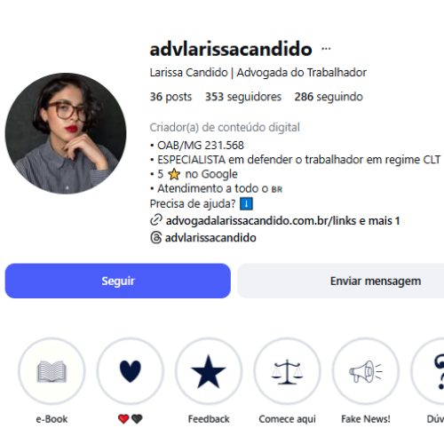
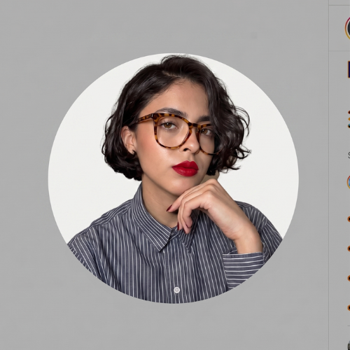
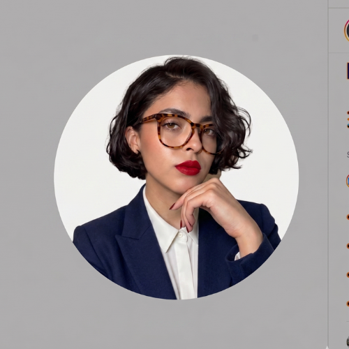

Nova Identidade Visual Sugerida
Por que mudar? A nova paleta substitui o azul frio por tons que transmitem acolhimento e proteção. O bege acetinado reduz o cansaço visual, aumentando o tempo de permanência no seu perfil.
Análise do Perfil do Instagram
2.1. Foto de Perfil
Foto de Perfil Atual (Print)

Evolução 1: Contraste

Evolução 2: Autoridade 'Padrão Ouro'

Por que sugiro mudança na sua foto de perfil?
Dra. Larissa, sua foto atual possui um fundo escuro que 'absorve' sua silhueta. Isso dificulta sua identificação em telas menores. A mudança para o fundo claro e o uso do blazer azul marinho elevam seu posicionamento de "moderna" para "autoridade inquestionável" no primeiro segundo.
2.2. @, Nome e Bio
Visão Geral Atual (bioatual.png)
Simulação da Nova Bio (novabio.png)

1. Nome de Usuário (@)
@advlarissacandido MANTER
2. Nome no Perfil (Busca)
Larissa Candido | Advogada Trabalhista CLT ALTERAR
Nova Estrutura de Bio Sugerida
Não deixe a empresa abusar dos seus direitos.
⭐ 5 Estrelas no Google | Atendimento em todo o 🇧🇷
Garantimos o que é seu por direito. Clica abaixo 👇
OAB/MG 231.568
Estratégia: O foco sai da "demissão" e passa para a "defesa e proteção geral". Isso valida qualquer dor que o trabalhador sinta, aumentando a conversão de anúncios variados.
SEO: A inclusão do termo "Trabalhista CLT" no nome faz seu perfil aparecer para quem pesquisa ativamente por socorro jurídico.
2.3. Destaques (Funil de Vendas)
Diagnóstico dos Destaques Atuais
Dra. Larissa, seus destaques hoje possuem nomes e conteúdos que dividem a atenção do cliente. Para o tráfego pago, precisamos de um funil que guie o trabalhador da curiosidade para a confiança e, finalmente, para o WhatsApp.
REMOVER
REOTIMIZAR
UNIFICAR
DIVIDIR
A Nova Ordem Estratégica (Funil de 5 Passos)
Sugestão de Conteúdos e Alterações Novas
Diagnóstico de "Gaps" (O que falta no conteúdo)
Com base no perfil atual e na estratégia de conversão, faltam posts que atuem nos gatilhos emocionais e nas objeções silenciosas do trabalhador CLT:
- posts de Identificação Imediata (O "Você sabia?"): posts que trazem uma dor que o trabalhador vive, mas que ele não sabe que é ilegal. Ex: "Meu chefe me obriga a dobrar jornada sem pagar".
- posts de Autoridade Empática (A "Missão"): posts que mostram por que ela defende o trabalhador (reclamante) e não a empresa. Isso gera conexão emocional profunda.
- posts de Prova Social Humanizada: Não apenas prints de WhatsApp, mas a história de um caso contada em vídeo, focado no alívio que o cliente sentiu ao final.
- posts de Quebra de Objeção de Preço (Urgente): Explicar de forma transparente o modelo de honorários contratuais (êxito de 30% no final), para eliminar o medo de "pagar advogado no início".
Os 4 Roteiros de Reels (Com Script para Gravação)
Roteiro 1: Gatilho de Identificação (Nicho: Assédio/Pressão)
Objetivo: Fazer o trabalhador que está sofrendo pensar: "Eu também passo por isso!".
Texto na Tela (Hook): Seu chefe te trata assim? Cuidado.
Trilha sugerida: Uma música tensa, mas não melancólica.
[CENA: Larissa em frente à câmera, com semblante sério e protetor.]
CTA (Texto na tela): Injustiçado no trabalho? Fala comigo. 👇
Legenda sugerida: "Ambiente de trabalho tóxico não é normal. O assédio moral corrói sua saúde e autoestima. Você não precisa carregar esse peso sozinho. Se identificou? Vamos conversar. 👇 #assedio moral #direitotrabalhista #clt"
Roteiro 2: Autoridade Empática (Nicho: Missão e Valores)
Objetivo: Explicar por que ela defende o trabalhador e não a empresa, gerando confiança.
Texto na Tela (Hook): Por que eu escolhi defender o trabalhador?
Trilha sugerida: Uma música de fundo inspiradora e calma.
[CENA: Larissa em um cenário acolhedor (poltrona ou mesa), falando com calma e firmeza.]
CTA (Texto na tela): Proteja seus direitos. Me chame no link da Bio 👇
Legenda sugerida: "A advocacia reclamante é minha missão. Defender o trabalhador Reclamante é lutar por justiça social e equilibrar a balança do poder corporativo. Seus direitos não são negociáveis. Se precisa de defesa, eu estou aqui. 👇 #advogada reclamante #justiçadotrabalho #dralarissa #clt"
Roteiro 3: Prova Social Humanizada (Nicho: Caso de Sucesso)
Objetivo: Contar a história de uma vitória, mas focando no alívio emocional do cliente.
Texto na Tela (Hook): Ele foi demitido e não recebeu nada. Olha o que aconteceu.
Trilha sugerida: Uma música que começa tensa e termina com um tom de vitória.
[CENA: Larissa em frente à câmera, com semblante sério no início e aliviado no final.]
CTA (Texto na tela): Quer ser defendido com firmeza? Chame no WhatsApp 👇
Legenda sugerida: "Empresa que não paga verba rescisória não está acima da lei. Conseguimos justiça para esse trabalhador e garantimos o sustento da família dele. Seus direitos são sagrados. Se você foi lesado, vamos lutar. 👇 #caso de sucesso jurídico #justiçatrabalhista #verbasrescisorias #clt"
Roteiro 4: Quebra de Objeção Universal (Nicho: Dinheiro)
Objetivo: Resolver o maior medo do cliente Reclamante antes dele te chamar.
Texto na Tela (Hook): Dra., preciso pagar advogado trabalhista agora?
Trilha sugerida: Uma música de fundo "clear" e neutra.
[CENA: Larissa em frente à câmera, com semblante sério e transparente.]
CTA (Texto na tela): Sem medo de buscar justiça. Clica abaixo 👇
Legenda sugerida: "Honorários transparentes e éticos. Na advocacia reclamante, o objetivo é garantir seus direitos sem que você precise se endividar para isso. Eu trabalho no êxito: só recebo se você receber. Sem desculpas para lutar pelo que é seu por direito. 👇 #honorários jurídicos #advocaciaclt #direitos #dralarissa #clt"
Mapeamento da Persona
Dores e Inseguranças
- "Fui demitido e não sei se recebi o valor correto."
- "Tenho medo de processar e nunca mais conseguir emprego."
- "Sinto que a empresa é muito grande e eu não tenho voz."
O que ela busca em você?
- Alguém que fale a língua dela (sem juridiquês).
- Segurança de que o direito dela será respeitado.
- Um atendimento que não a trate como apenas "mais um número".